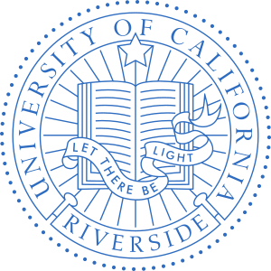
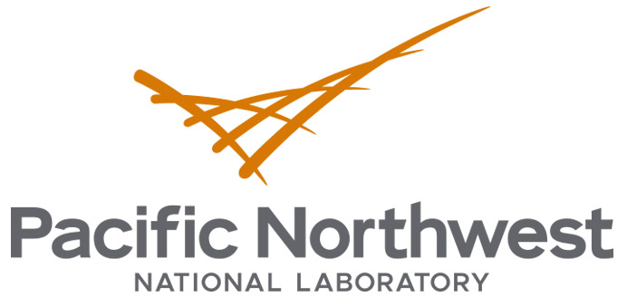

Welcome
Shivanshu Tripathi
PhD Candidate, Electrical and Computer Engineering
University of California, Riverside
I am a PhD candidate in the Department of Electrical and Computer Engineering at UC Riverside, advised by Prof. Maziar Raissi. I work under a close collaboration with Prof. Hamed Mohsenian-Rad. My research interest lies at the intersection of online optimization, agentic AI, physics-informed ML, scientific ML, and smart grids.
I expect to complete my PhD in June 2027.
Education
-

University of California, Riverside
2022 – 2027
Ph.D. + M.S., Electrical and Computer Engineering.
-

Indian Institute of Technology Jodhpur
2020 – 2022
M.Tech., Electrical Engineering (Cyber Physical Systems).
-

National Institute of Technology Srinagar
2016 – 2020
B.Tech., Electrical Engineering.
Experience
-
National Laboratory of the Rockies
Jun – Sep 2026
Graduate research intern, Golden, CO.
Foundation models and AI agents for power systems.
Advisor: Dr. Fei Ding. -

Pacific Northwest National Laboratory
Nov 2025 – Mar 2026
Graduate research intern, Richland, WA.
Developed AI agents for power systems.
Advisor: Dr. Kaveri Mahapatra. -
Department of Telecommunications
May – Aug 2022
Research associate, Government of India.
News
-
“Online Optimization with Unknown Time-Varying Parameters using Noisy Gradient Measurements” was accepted to IEEE Control Systems Letters (L-CSS) — read the preprint.
-
Attended ICHQP in Dresden, Germany, to present our physics-informed synchro-waveform paper.
-
Our critical review of AI and machine learning methods for data-center load forecasting is out in Energies — read the paper.
-
Posted two grid-edge papers on arXiv: VeraGrid-Agent, a tool-augmented LLM for distribution optimal power flow, and a spectrogram-based detector for events in continuously recorded IBR waveforms.
-
Started a graduate research internship at NLR (National Laboratory of the Rockies) in Golden, CO, building foundation models and AI agents for power systems with Dr. Fei Ding.
-
“Test-Driven Agentic Framework for Reliable Robot Controller” was accepted to ICCAS (International Conference on Control, Automation and Systems) — read the preprint or see the project page.
-
“Data-Efficient Physics-Informed Learning for Synchro-Waveform Analytics of Grid-Integrated Inverter-Based Resources” was accepted to ICHQP (IEEE International Conference on Harmonics and Quality of Power) — read the preprint.
-
Presented our NSF-supported work on physics-informed learning at Rutgers University.
-
Joined PNNL (Pacific Northwest National Laboratory) as a graduate research intern, developing AI agents for power systems with Dr. Kaveri Mahapatra.
-
“Online Optimization with Unknown Time-Varying Parameters” was published in IEEE Control Systems Letters — read the paper.
Research
All research-
Agentic AI for power systems
Tool-augmented language models that call solvers and simulators instead of guessing. VeraGrid-Agent writes the feeder and DER input, executes the solver, and reads only the relevant output, lifting accuracy on grid-edge questions from roughly 45% to near-perfect.
-
Physics-informed & scientific ML
Embedding circuit equations into learning so that synchro-waveform models of inverter-based resources can be identified from a handful of disturbance events rather than thousands, including the case where line parameters are themselves unknown.
-
Online optimization & distributed control
Tracking the minimizer of a cost whose parameters are latent and evolve under unknown dynamics, using only finitely many gradient measurements — plus fixed-time economic dispatch and exact distributed attitude alignment for multi-agent teams.
Selected Publications
All publications-
Online Optimization with Unknown Time-Varying Parameters using Noisy Gradient Measurements Accepted
IEEE Control Systems Letters, 2026 (to appear)
-
Online Optimization with Unknown Time-Varying Parameters
IEEE Control Systems Letters, Vol. 9, pp. 1610–1615, 2025
-
Data-Efficient Physics-Informed Learning for Synchro-Waveform Analytics of Grid-Integrated Inverter-Based Resources
IEEE International Conference on Harmonics and Quality of Power (ICHQP), 2026
-
A Partially Distributed Fixed-Time Economic Dispatch Algorithm with Kron’s Modeled Power Transmission Losses
IEEE Transactions on Control of Network Systems, 2023
Honors & Awards
- Dean’s Distinguished Fellowship, University of California, Riverside
- Gold medal for outstanding student in academics, IIT Jodhpur
- Best B.Tech. undergraduate thesis in the department, NIT Srinagar